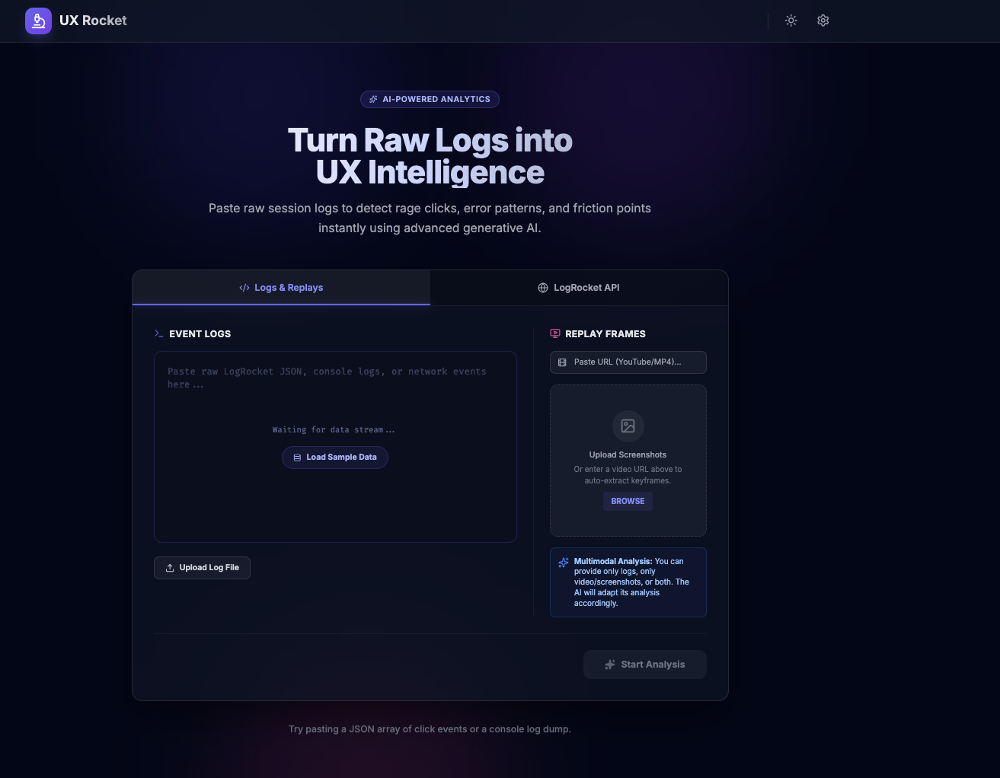
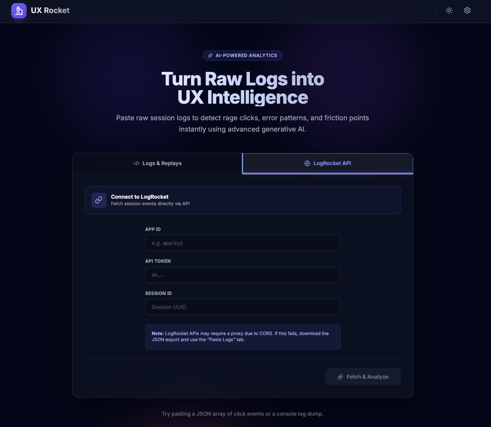
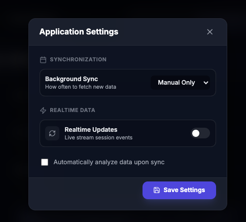
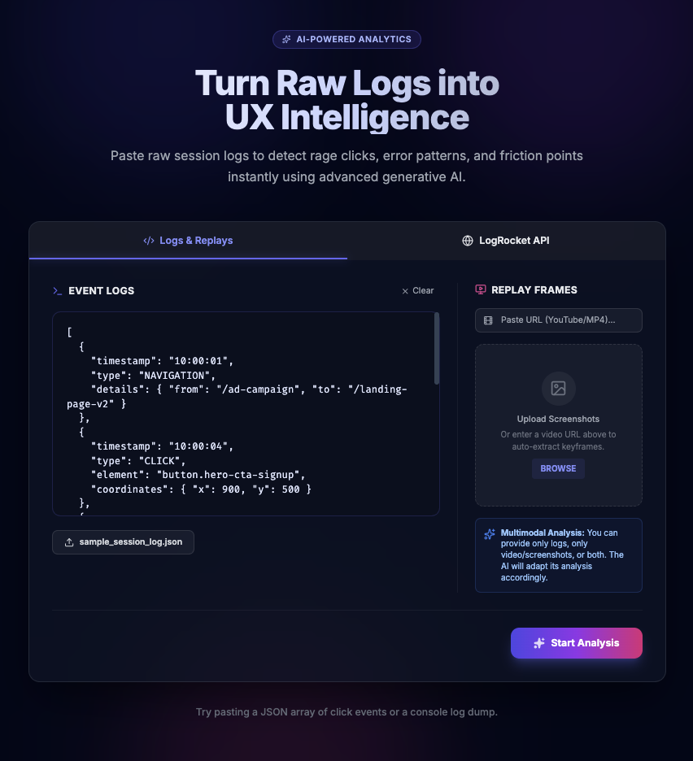
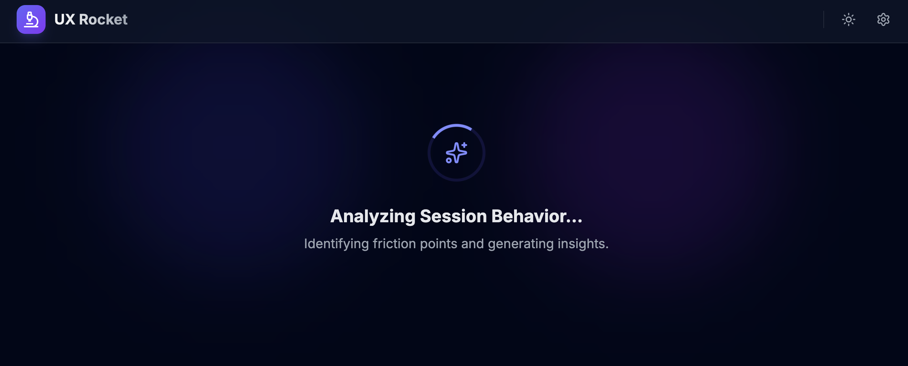
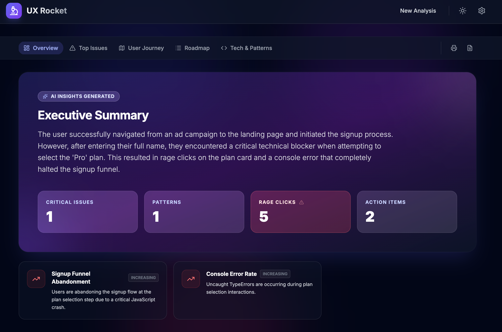
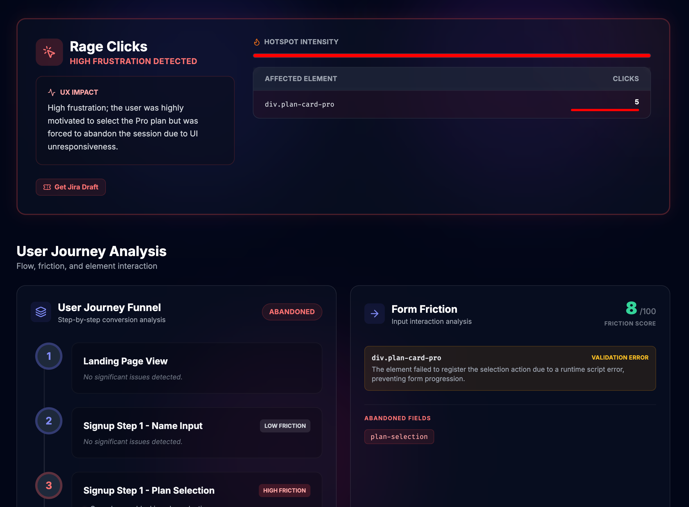

Core challenge
Session replay tools collect valuable behavioral data, but insight extraction is still highly manual and hard to scale.
Personal Product | AI-Powered UX Intelligence
An AI-powered analysis platform that transforms raw session recordings, event logs, and replay evidence into actionable UX insights for design, product, and engineering teams.

Case Study Highlights
Session replay tools collect valuable behavioral data, but insight extraction is still highly manual and hard to scale.
Product strategy, UX workflow mapping, AI analysis model, prompt structure, reporting logic, and interface direction.
Combine LogRocket data, event logs, video frames, screenshots, and AI-generated summaries in one analysis workflow.
Help teams detect friction faster, identify recurring patterns, and spend more time solving problems than searching for them.
Overview
UX Rocket is an AI-powered analysis platform that transforms raw session recordings and event logs into actionable UX insights. It helps design, product, and engineering teams automatically identify usability issues, user friction, technical problems, and improvement opportunities without spending hours reviewing session recordings manually.
Built using Google AI Studio, the product combines LogRocket session data, replay evidence, video or screenshot analysis, and AI-generated reporting into a single workflow.
Goal
The Problem
Tools like LogRocket provide valuable behavioral data, but extracting meaningful insights remains a manual process. In my day-to-day work, I often spent hours watching recordings, reviewing interactions, searching for UX issues, identifying technical failures, documenting findings, and sharing notes with stakeholders.
As products scale, thousands of sessions are generated every week. The problem becomes less about access to data and more about converting that data into actionable UX intelligence.
Research & Discovery
I mapped the current workflow from opening a replay to sharing findings. A single session could take 10 to 30 minutes to review, while larger investigations could take several hours across multiple recordings and logs.
Pain Points
Solution
Teams can bring in LogRocket exports, event logs, console logs, network logs, screenshots, and replay evidence for AI review.
API integration enables session synchronization, automated data retrieval, and faster investigation workflows.
AI analyzes user journeys, navigation behavior, click patterns, error events, friction points, and drop-off indicators.
The system generates recurring reports, stores recent analyses, and aggregates findings by frequency, impact, and product area.
Recent Analyses gives teams a fast way to reopen previous AI reviews, compare findings, and continue investigations without starting over.
Generated reports can be exported to Markdown or printed, making it easier to share findings in docs, tickets, and stakeholder reviews.
Key Features
Reviews navigation patterns, user journeys, click behavior, errors, friction points, and drop-off indicators.
Identifies confusing interactions, incomplete flows, usability bottlenecks, navigation issues, and conversion blockers.
Highlights API failures, JavaScript errors, rage clicks, dead clicks, broken experiences, and performance concerns.
Produces daily, weekly, and monthly reports that help teams continuously monitor product health.
Keeps previous session reviews accessible so teams can revisit findings, compare patterns, and track investigation history.
Supports exporting analysis reports to Markdown and printing polished reports for documentation, Jira tickets, or stakeholder updates.
Product Screens

A central view for reviewing AI-generated UX findings, friction signals, and session-level evidence.

Structured entry points for bringing replay exports, logs, screenshots, and analysis inputs into the workflow.

AI-generated issue summaries help teams identify confusing interactions, dead ends, and conversion blockers.

Recurring report views summarize key findings, severity, trends, recommended next actions, and provide Markdown export or print options.

Recent analyses and aggregated patterns help teams understand which UX and technical issues repeat across sessions.

The report experience supports sharing through Markdown export and print-ready output for documentation or stakeholder review.

The report UI turns session evidence into a structured summary with detected issues, severity, impact, and recommended actions.
UX Decisions
Instead of relying only on event logs, I combined session events, replay screenshots, and video analysis. This gave the AI model richer behavioral and visual context, making the generated insights more useful for product teams.
Workflow Strategy
The product supports pasting logs, uploading files, uploading screenshots, and connecting through the LogRocket API. This progressive workflow lets different teams start with the level of integration they can support.
Automation First
I prioritized automation across data synchronization, AI analysis, report generation, and trend detection. The intent was not to replace product judgment, but to reduce the amount of repetitive review work required before teams could make decisions.
Low-Fidelity Exploration
High-Fidelity Design
Outcome & Impact
UX Rocket transformed session review from a repetitive manual workflow into a scalable AI-assisted process. It created a faster path from raw behavioral evidence to product insight, team discussion, prioritization, and action.
Reflection
This project reinforced an important lesson: session replay tools generate valuable data, but the real value comes from converting that data into actionable decisions.
UX Rocket demonstrates how AI can augment product design workflows by reducing repetitive analysis work and helping teams focus on solving user problems, improving usability, and delivering better product experiences.
Contact
Open to Senior Product Designer, UX Designer, and Design System opportunities.